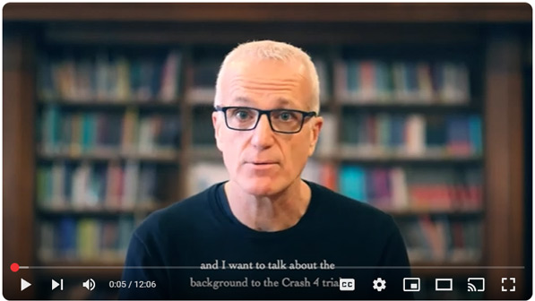
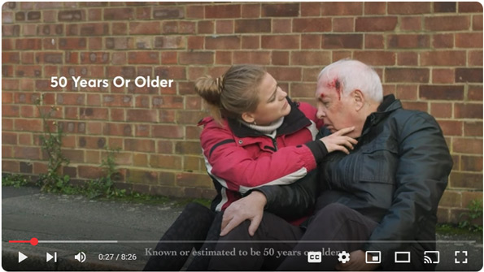

Training
Here you will find links to the training necessary to be able to enroll patients into the clinical trials we run


Good Clinical Practice (GCP)
Good clinical practice (GCP) online training
Having a GCP course certificate is essential to be on the delegation log for many studies.
Full online GCP course from NIHR, free to all NHS staff:
First you need to created a NIHR Learn account, and then you can view all courses and enrol onto the online GCP course. There will be a link to GCP on the homepage, currently labelled "GCP and research delivery e-learning hub". Click there and then find the “Enrol me” button. The course takes about three hours to complete.
When you have completed the course, Please email a copy of your certificate to the ED Research team at cuh.edresearchteam⒰nhs.net If you experience any problems with this please contact the ED Research team.
Create an NIHR Learn account
and access the GCP course here:

The Early Vasopressor in Sepsis (EVIS) study
In order to be authorised to confirm eligibility and prescribe for the EVIS study, you need only confirm you have read the three slide-sets linked below, and hold a current GCP certificate. Please email the ED Research Team at: cuh.edresearchteam＠nhs.net to arrange to sign the delegation log.
uDCD - A Feasibility Study of Uncontrolled Donation After Circulatory Death
Training video
Click here:

Aspirin in patients with pneumonia
For the prevention of cardiovascular events
The study needs a doctor to prescribe. But to be able to do so, you have to have been trained on the study's training materials.
The training modules to prescribe for the study are accessible through the Emergency Department's sharepoint folder.
To access them, your device needs to be logged into your nhs.net account, then click on the link below.
THen click the last link to register on the online delegation log
You don't need GCP to prescribe for this study.
Click here:

Intramuscular TXA in older patients with mild TBI
To reduce intracranial haemorrhage; diability; death; dementia
Intramuscular tranexamic acid for the treatment of symptomatic mild traumatic brain injury in older adults: a
randomised, double-blind, placebo-controlled trial
In order to be a prescriber, you simply have to watch these three videos (it takes 30 minutes in total):
Background & Rationale:
Click here:
Assessing eligibility
and capacity to consent:
CLick here:
Specific GCP for CRASH4:
Click here:

Unfortunately the third video; "Specific GCP for CRASH4" appears to have been removed. Please contact the research team for advice on how to proceed.
Once you have watched the videos, please email the ED Research team to confirm.
In order to be able to enrol patients to CRASH 4 there is a further hours’ worth of training to do which includes videos and PDF documents – to access these please contact the ED Research Team"
Comparing POP cast vs splint
In adults with distal radius fracture
In order to be authorised to enrol patients to the DRAFT-3 study, you need only confirm you have read the slides linked below, and hold a current GCP certificate. Please email the ED Research Team at: cuh.edresearchteam＠nhs.net to arrange to sign the delegation log